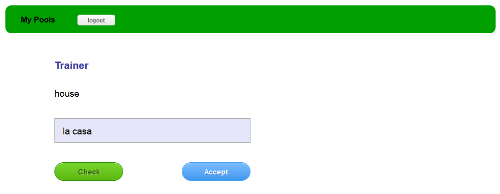

-
Was kann lalaLama:
Die Vokabelverwaltung
Deine Ordner und Listen werden, wie man es von seinem Betriebssystem kennt, in einer Art Explorer angelegt.
Dies ermöglicht eine übersichtliche Verwaltung
Wie du es gewohnt bist, öffnet sich mit einem Rechtsklick auf einen Ordner ein Kontextmenü, mit dem du z.B eine neue Liste erstellen kannst.
Hier kannst du verschiedene Vokabeltypen speichern, ganz normale 1:1 Abfragen wie "house" und "party",
oder Fragen mit mehreren Antworten wie z.B die spanische Deklination von "to go"(gehen) , oder Multi Choice um z.B die Anwendung von ser und estar zu üben.
- Bei einem Klick auf den Plus Button kannste du neue Antworten hinzufügen
- Möchtest du die Multiple Choice variante wählen, wähle einfach die Antworten aus, die als richtig akzeptiert werden sollen, indem du einen Haken setzt
Wenn du auf den grünen "Lernen" Button klickst, startet der Trainingsmodus mit den Vokabeln der betreffenden Liste.
Der Trainingsmodus
Hast du eine Antwort eingegeben, drücke den Check Button, oder die Enter-Taste um deine Antwort zu überprüfen.
Du kannst das Feld auch leer lassen,
falls du die Antwort nur im Kopf durchgehen, und dir die Tipparbeit sparen willlst.

In diesem Beispiel hast du "fiesta" eingegeben, die richtige Antwort wäre aber "la fiesta" gewesen,
nun hast du zwei Möglichkeiten.
- Du drückst noch einmal den "Check" Button(oder Enter Taste).
Dann Wird deine Antwot als falsch gewertet. Oder
- Du drückst "Accept" dann wird die Antwort als richtig gewertet.
Das macht Sinn, wenn du eigentlich weißt,
dass der Artikel "la" ist, aber du nur zu faul warst ihn zu schreiben. Oder du fragst dich komplexe Lerninhalte ab, da gehst du die Antwort dann im Kopf durch, lässt das Antwort feld aber leer,
sobald dir die Antwort angezeigt wird, entscheidest du selbst, ob du sie als richtig akzeptieren kannst oder oben nicht. Sei ehrlich zu dir selbst ;)
Das macht Sinn, wenn du eigentlich weißt, dass der Artikel "la" ist, aber du nur zu faul warst ihn zu schreiben. Oder du fragst dich komplexe Lerninhalte ab, da gehst du die Antwort dann im Kopf durch, lässt das Antwort feld aber leer, sobald dir die Antwort angezeigt wird, entscheidest du selbst, ob du sie als richtig akzeptieren kannst oder oben nicht. Sei ehrlich zu dir selbst ;)
Hast du Fragen mit mehreren Antowrtmöglichkeiten, wie hier z.B die Deklination von dem spanischen Verb "ir", dann werden dir die Antworten, die du bereits eingegeben hast, in der Liste rechts angezeigt,
Genauso, wenn du dich die Vokabeln noch einmal abfragst, dann werden die Antworten, die du bereits kannst angezeigt.
Multiple Choice Antworten werden wie Folgt angezeigt
Wähle eine oder mehrer der Antwortmöglichkeiten aus und drücke dann den "Check" Button